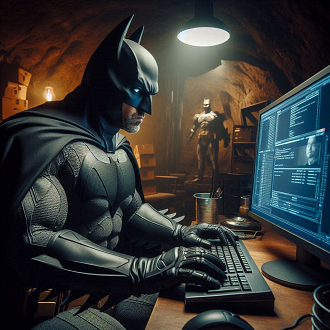
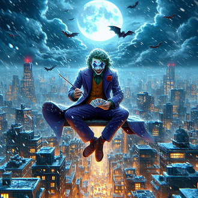
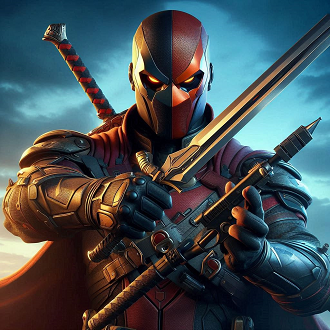

-
Mocego
Descrição
Sem Superpoderes: Diferentemente de muitos super-heróis, Mocego não possui superpoderes. Sua força vem de seu intelecto, habilidades de combate, treinamento rigoroso e uma vasta fortuna que financia seus equipamentos e atividades. Habilidades: Mocego é um mestre em artes marciais, acrobacia, furtividade, investigação, escapismo e tem um intelecto genial, sendo um dos maiores detetives do mundo. Equipamentos e Tecnologia: Utiliza uma variedade de gadgets tecnológicos, incluindo o Cegmóvel, o Ceg-sinal, Cegarangues, o Ceg-computador e muitos outros dispositivos projetados e fabricados em sua Cegcaverna. Aparência: Mocego é conhecido por seu traje negro com um símbolo de morcego no peito, capa, capuz com orelhas de morcego e um cinto de utilidades.
-
Sorrisinho
Descrição
Caos e Anarquia: O Sorrisinho é a personificação do caos e da anarquia. Ele não possui um motivo claro para seus atos de violência, muitas vezes afirmando que faz o que faz simplesmente para semear o caos e provar que qualquer um pode se tornar como ele em circunstâncias extremas. Inteligência e Manipulação: Apesar de sua aparência e comportamento loucos, o Sorrisinho é extremamente inteligente e um mestre manipulador. Ele frequentemente elabora planos intrincados para testar o Mocego e Gotham City. Ausência de Remorso: O Sorrisinho não tem empatia ou remorso por suas ações, o que o torna imprevisível e perigoso. Ele não hesita em matar ou torturar suas vítimas para alcançar seus objetivos ou simplesmente por diversão.
-
Extermi
Descrição
Aprimoramentos Físicos: Devido ao experimento, Deathstroke possui força, velocidade, agilidade e resistência super-humanas. Ele também tem um fator de cura que lhe permite se recuperar rapidamente de ferimentos. Habilidades de Combate: Ele é um mestre em artes marciais, combate corpo a corpo e uso de armas. Sua habilidade estratégica e conhecimento em táticas de guerra o tornam um adversário formidável. Intelecto: Deathstroke é um gênio tático e estrategista. Ele é capaz de prever e antecipar os movimentos de seus inimigos, fazendo dele um oponente extremamente perigoso e imprevisível.
-
Arle Esquina

Descrição
Eclética e Volátil: Arle Esquina é altamente imprevisível e possui uma personalidade excêntrica e volátil. Ela pode ser brincalhona e carismática, mas também extremamente perigosa e violenta. Lealdade ao Coringa: Originalmente, grande parte de sua motivação e ações eram impulsionadas por sua devoção ao Coringa. Contudo, em histórias mais recentes, ela tem se emancipado dessa relação abusiva e desenvolvido sua própria identidade. Habilidades: Arle Esquina é uma ginasta altamente treinada, com habilidades acrobáticas excepcionais. Ela também é uma combatente corpo a corpo competente e usa uma variedade de armas, incluindo um enorme martelo e uma marreta. Intelecto: Apesar de sua loucura, Harleen Quinzel mantém seu intelecto afiado, com conhecimento em psicologia e psiquiatria, o que ela usa tanto para manipulação quanto para entender melhor os comportamentos de seus inimigos e aliados.
-
Muie Cat

Descrição
Independente e Astuta: Muie Cat é extremamente independente, confiando em suas habilidades e inteligência para superar desafios. Ela é astuta e sabe como manipular situações a seu favor. Moral Ambígua: Embora seja uma ladra, Muie Cat possui um código de ética pessoal. Ela muitas vezes rouba dos ricos e corruptos, e tem um forte senso de justiça quando se trata de proteger os vulneráveis e inocentes. Relação com o Mocego: Selina Kyle tem uma relação complexa e multifacetada com Bruce Wayne/Mocego. Eles compartilham uma atração mútua e um respeito profundo, mas suas diferenças de moralidade e métodos frequentemente os colocam em conflito. Habilidades: Muie Cat é uma atleta excepcional, especialista em ginástica e artes marciais. Ela é também uma ladra mestre, com habilidades avançadas em furtividade, arrombamento e disfarce.